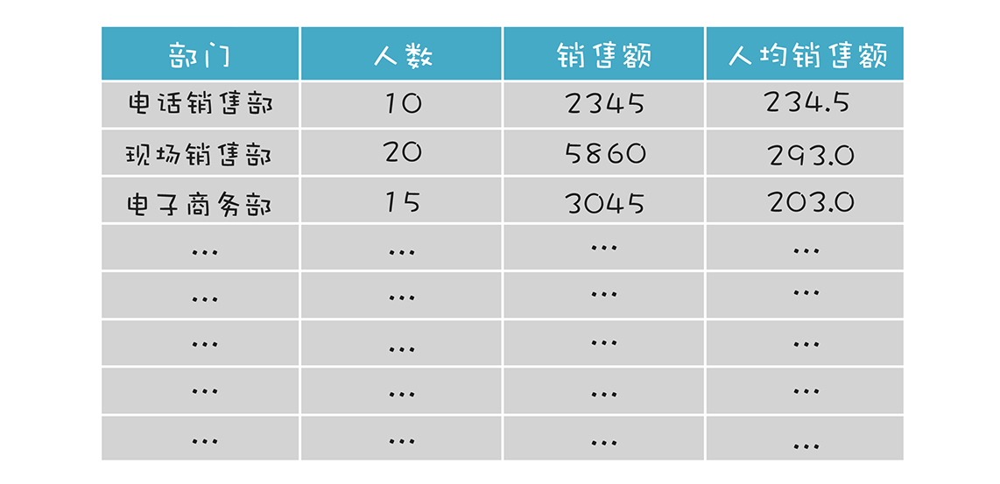
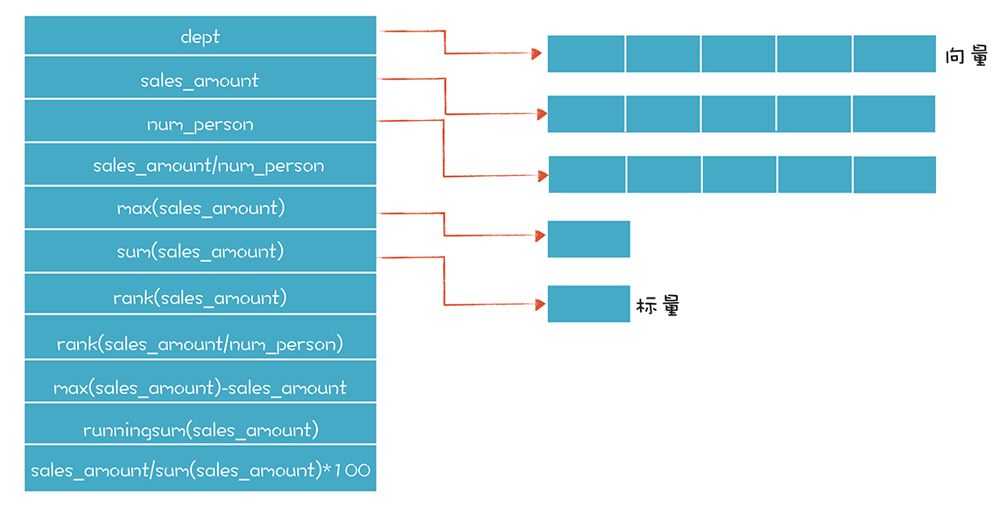
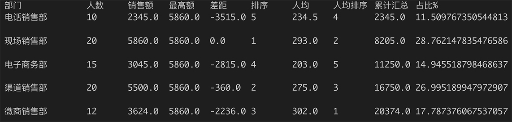

- 00 开篇词 为什么你要学习编译原理？.md
- 01 理解代码：编译器的前端技术.md
- 02 正则文法和有限自动机：纯手工打造词法分析器.md
- 03 语法分析（一）：纯手工打造公式计算器.md
- 04 语法分析（二）：解决二元表达式中的难点.md
- 05 语法分析（三）：实现一门简单的脚本语言.md
- 06 编译器前端工具（一）：用Antlr生成词法、语法分析器.md
- 07 编译器前端工具（二）：用Antlr重构脚本语言.md
- 08 作用域和生存期：实现块作用域和函数.md
- 09 面向对象：实现数据和方法的封装.md
- 10 闭包： 理解了原理，它就不反直觉了.md
- 11 语义分析（上）：如何建立一个完善的类型系统？.md
- 12 语义分析（下）：如何做上下文相关情况的处理？.md
- 13 继承和多态：面向对象运行期的动态特性.md
- 14 前端技术应用（一）：如何透明地支持数据库分库分表？.md
- 15 前端技术应用（二）：如何设计一个报表工具？.md
- 16 NFA和DFA：如何自己实现一个正则表达式工具？.md
- 17 First和Follow集合：用LL算法推演一个实例.md
- 18 移进和规约：用LR算法推演一个实例.md
- 19 案例总结与热点问题答疑：对于左递归的语法，为什么我的推导不是左递归的？.md
- 20 高效运行：编译器的后端技术.md
- 21 运行时机制：突破现象看本质，透过语法看运行时.md
- 22 生成汇编代码（一）：汇编语言其实不难学.md
- 23 生成汇编代码（二）：把脚本编译成可执行文件.md
- 24 中间代码：兼容不同的语言和硬件.md
- 25 后端技术的重用：LLVM不仅仅让你高效.md
- 26 生成IR：实现静态编译的语言.md
- 27 代码优化：为什么你的代码比他的更高效？.md
- 28 数据流分析：你写的程序，它更懂.md
- 29 目标代码的生成和优化（一）：如何适应各种硬件架构？.md
- 30 目标代码的生成和优化（二）：如何适应各种硬件架构？.md
- 31 内存计算：对海量数据做计算，到底可以有多快？.md
- 32 字节码生成：为什么Spring技术很强大？.md
- 33 垃圾收集：能否不停下整个世界？.md
- 34 运行时优化：即时编译的原理和作用.md
- 35 案例总结与热点问题答疑：后端部分真的比前端部分难吗？.md
- 36 当前技术的发展趋势以及其对编译技术的影响.md
- 37 云编程：云计算会如何改变编程模式？.md
- 38 元编程：一边写程序，一边写语言.md
- 加餐 汇编代码编程与栈帧管理.md
- 用户故事 因为热爱，所以坚持.md
- 第二季回归 这次，我们一起实战解析真实世界的编译器.md
- 结束语 用程序语言，推动这个世界的演化.md
15 前端技术应用（二）：如何设计一个报表工具？
众所周知，很多软件都需要面向开发者甚至最终用户提供自定义功能，在开篇词里，我提到自己曾经做过工作流软件和电子表单软件，它们都需要提供自定义功能，报表软件也是其中的典型代表。
在每个应用系统中，我们对数据的处理大致会分成两类：一类是在线交易，叫做OLTP，比如在网上下订单；一类是在线分析，叫做OLAP，它是对应用中积累的数据进行进一步分析利用。而报表工具就是最简单，但也是最常用的数据分析和利用的工具。
本节课，我们就来分析一下，如果我们要做一个通用的报表工具，需要用到哪些编译技术，又该怎样去实现。
报表工具所需要的编译技术
如果要做一个报表软件，我们要想清楚软件面对的用户是谁。有一类报表工具面向的用户是程序员，那么这种软件可以暴露更多技术细节。比如，如果报表要从数据库获取数据，你可以写一个SQL语句作为数据源。
还有一类软件是给业务级的用户使用的，很多BI软件包都是这种类型。带有IT背景的顾问给用户做一些基础配置，然后用户就可以用这个软件包了。Excel可以看做是这种报表工具，IT人员建立Excel与数据库之间的连接，剩下的就是业务人员自己去操作了。
这些业务人员可以采用一个图形化的界面设计报表，对数据进行加工处理。我们来看看几个场景。
第一个场景是计算字段。计算字段的意思是，原始数据里没有这个数据，我们需要基于原始数据，通过一个自定义的公式来把它计算出来。比如在某个CRM系统中保存着销售数据，我们有每个部门的总销售额，也有每个部门的人数，要想在报表中展示每个部门的人均销售额，这个时候就可以用到计算公式功能，计算公式如下：
人均销售额=部门销售额/部门人数
得到的结果如下图所示：

进一步，我们可以在计算字段中支持函数。比如我们可以把各个部门按照人均销售额排名次。这可以用一个函数来计算：
=rank(人均销售额)
rank就是排名次的意思，其他统计函数还包括：
- min()，求最小值。
- max()，求最大值。
- avg()，求平均值。
- sum()，求和。
还有一些更有意思的函数，比如：
- runningsum()，累计汇总值。
- runningavg()，累计平均值。
这些有意思的函数是什么意思呢？因为很多明细性的报表，都是逐行显示的，累计汇总值和累计平均值，就是累计到当前行的计算结果。当然了，我们还可以支持更多的函数，比如当前日期、当前页数等等。更有意思的是，上述字段也好、函数也好，都可以用来组合成计算字段的公式，比如：
=部门销售额/sum(部门销售额) //本部门的销售额在全部销售额的占比
=max(部门销售额)-部门销售额 //本部门的销售额与最高部门的差距
=max(部门销售额/部门人数)-部门销售额/部门人数 //本部门人均销售额与最高的那个部门的差
=sum(部门销售额)/sum(人数)-部门销售额/部门人数 //本部门的人均销售额与全公司人均销售额的差
怎么样，是不是越来越有意思了呢？现在你已经知道了在报表中会用到普通字段和各种各样的计算公式，那么，我们如何用这样的字段和公式来定义一张报表呢？
如何设计报表
假设我们的报表是一行一行地展现数据，也就是最简单的那种。那我们将报表的定义做成一个XML文件，可能是下面这样的，它定义了表格中每一列的标题和所采用字段或公式：
<playreport title="Report 1">
<section>
<column>
<title>部门</title>
<field>dept</field>
</column>
<column>
<title>人数</title>
<field>num_person</field>
</column>
<column>
<title>销售额</title>
<field>sales_amount</field>
</column>
<column>
<title>人均销售额</title>
<field>sales_amount/num_person</field>
</column>
</section>
<datasource>
<connection>数据库连接信息...</connection>
<sql>select dept, num_person, sales_amount from sales</sql>
</datasource>
</playreport>
这个报表定义文件还是蛮简单的，它主要表达的是数据逻辑，忽略了表现层的信息。如果我们想要优先表达表现层的信息，例如字体大小、界面布局等，可以采用HTML模板的方式来定义报表，其实就是在一个HTML中嵌入了公式，比如：
<html>
<body>
<div class="report" datasource="这里放入数据源信息">
<div class="table_header">
<div class="column_header">部门</div>
<div class="column_header">人数</div>
<div class="column_header">销售额</div>
<div class="column_header">人均销售额</div>
</div>
<div class="table_body">
<div class="field">{=dept}</div>
<div class="field">{=num_person}</div>
<div class="field">{=sales_amount}</div>
<div class="field">{=sales_amount/num_person}</div>
</div>
</div>
</body>
</html>
这样的HTML模板看上去是不是很熟悉？其实在很多语言里，比如PHP，都提供模板引擎功能，实现界面设计和应用代码的分离。这样一个模板，可以直接解释执行，或者先翻译成PHP或Java代码，然后再执行。只要运用我们学到的编译技术，这些都可以实现。
我想你应该会发现，这样的一个模板文件，其实就是一个特定领域语言，也就是我们常说的DSL。DSL可以屏蔽掉实现细节，让我们专注于领域问题，像上面这样的DSL，哪怕没有技术背景的工作人员，也可以迅速地编写出来。
而这个简单的报表，在报表设计界面上可能是下图这样的形式：
分析完如何设计报表之后，接下来，我们看看如何定义报表所需要的公式规则。
编写所需要的语法规则
我们设计了PlayReport.g4规则文件，这里面的很多规则，是把PlayScript.g4里的规则拿过来改一改用的：
bracedExpression
: '{' '=' expression '}'
;
expression
: primary
| functionCall
| expression bop=('*'|'/'|'%') expression
| expression bop=('+'|'-') expression
| expression bop=('<=' | '>=' | '>' | '<') expression
| expression bop=('==' | '!=') expression
| expression bop='&&' expression
| expression bop='||' expression
;
primary
: '(' expression ')'
| literal
| IDENTIFIER
;
expressionList
: expression (',' expression)*
;
functionCall
: IDENTIFIER '(' expressionList? ')'
;
literal
: integerLiteral
| floatLiteral
| CHAR_LITERAL
| STRING_LITERAL
| BOOL_LITERAL
| NULL_LITERAL
;
integerLiteral
: DECIMAL_LITERAL
| HEX_LITERAL
| OCT_LITERAL
| BINARY_LITERAL
;
floatLiteral
: FLOAT_LITERAL
| HEX_FLOAT_LITERAL
;
这里面，其实就是用了表达式的语法，包括支持加减乘除等各种运算，用来书写公式。我们还特意支持functionCall功能，也就是能够调用函数。因为我们内部实现了很多内置函数，比如求最大值、平均值等，可以在公式里调用这些函数。
现在呢，我们已经做好了一个最简单的报表定义，接下来，就一起实现一个简单的报表引擎，这样就能实际生成报表了！
实现一个简单的报表引擎
报表引擎的工作，是要根据报表的定义和数据源中的数据，生成最后报表的呈现格式。具体来说，可以分为以下几步：
- 解析报表的定义。我们首先要把报表定义形成Java对象。这里只是简单地生成了一个测试用的报表模板。
- 从数据源获取数据。我们设计了一个TabularData类，用来保存类似数据库表那样的数据。
- 实现一个FieldEvaluator类，能够在运行时对字段和公式进行计算。这个类是playscript中ASTEvaluator类的简化版。我们甚至连语义分析都简化了。数据类型信息作为S属性，在求值的同时自底向上地进行类型推导。当然，如果做的完善一点儿，我们还需要多做一点儿语义分析，比如公式里的字段是不是数据源中能够提供的？而这时需要用到报表数据的元数据。
- 渲染报表。我们要把上面几个功能组合在一起，对每一行、每一列求值，获得最后的报表输出。
主控程序我放在了下面，用一个示例报表模板和报表数据来生成报表：
public static void main(String args[]) {
System.out.println("Play Report!");
PlayReport report = new PlayReport();
//打印报表1
String reportString = report.renderReport(ReportTemplate.sampleReport1(), TabularData.sampleData());
System.out.println(reportString);
}
renderReport方法用来渲染报表，它会调用解析器和报表数据的计算器：
public String renderReport(ReportTemplate template, TabularData data){
StringBuffer sb = new StringBuffer();
//输出表格头
for (String columnHeader: template.columnHeaders){
sb.append(columnHeader).append('\t');
}
sb.append("\n");
//编译报表的每个字段
List<BracedExpressionContext> fieldASTs = new LinkedList<BracedExpressionContext>();
for (String fieldExpr : template.fields){
//这里会调用解析器
BracedExpressionContext tree = parse(fieldExpr);
fieldASTs.add(tree);
}
//计算报表字段
FieldEvaluator evaluator = new FieldEvaluator(data);
List<String> fieldNames = new LinkedList<String>();
for (BracedExpressionContext fieldAST: fieldASTs){
String fieldName = fieldAST.expression().getText();
fieldNames.add(fieldName);
if (!data.hasField(fieldName)){
Object field = evaluator.visit(fieldAST);
data.setField(fieldName, field);
}
}
//显示每一行数据
for (int row = 0; row< data.getNumRows(); row++){
for (String fieldName: fieldNames){
Object value = data.getFieldValue(fieldName, row);
sb.append(value).append("\t");
}
sb.append("\n");
}
return sb.toString();
}
程序的运行结果如下，它首先打印输出了每个公式的解析结果，然后输出报表：
Play Report!
(bracedExpression { = (expression (primary dept)) })
(bracedExpression { = (expression (primary num_person)) })
(bracedExpression { = (expression (primary sales_amount)) })
(bracedExpression { = (expression (expression (primary sales_amount)) / (expression (primary num_person))) })
部门 人数 销售额 人均销售额
电话销售部 10 2345.0 234.5
现场销售部 20 5860.0 293.0
电子商务部 15 3045.0 203.0
渠道销售部 20 5500.0 275.0
微商销售部 12 3624.0 302.0
你可以看到，报表工具准确地得出了计算字段的数据。接下来，我再讲一讲报表数据计算的细节。
如果你看一看FieldEvaluator.java这个类，就会发现我实际上实现了一个简单的向量数据的计算器。在计算机科学里，向量是数据的有序列表，可以看做一个数组。相对应的，标量只是一个单独的数据。运用向量计算，我们在计算人均销售额的时候，会把“销售额”和“人数”作为两个向量，每个向量都有5个数据。把这两个向量相除，会得到第三个向量，就是“人均销售额”。这样就不需要为每行数据运行一次计算器，会提高性能，也会简化程序。
其实，这个向量计算器还能够把向量和标量做混合运算。因为我们的报表里有时候确实会用到标量，比如对销售额求最大值{=max(sales_amount)}，就是一个标量。而如果计算销售额与最大销售额的差距{=max(sales_amount)-sales_amount}，就是标量和向量的混合运算，返回结果是一个向量。
TabularData.java这个类是用来做报表数据的存储的。我简单地用了一个Map，把字段的名称对应到一个向量或标量上，其中字段的名称可以是公式：

在报表数据计算过程中，我们还做了一个优化。公式计算的中间结果会被存起来，如果下一个公式刚好用到这个数据，可以复用。比如，在计算rank(sales_amount/num_person)这个公式的时候，它会查一下括号中的sales_amount/num_person这个子公式的值是不是以前已经计算过，如果计算过，就复用，否则，就计算一下，并且把这个中间结果也存起来。
我们把这个报表再复杂化一点，形成下面一个报表模板。这个报表模板用到了好几个函数，包括排序、汇总值、累计汇总值和最大值，并通过公式定义出一些相对复杂的计算字段，包括最高销售额、销售额的差距、销售额排序、人均销售额排序、销售额累计汇总、部门销售额在总销售额中的占比，等等。
public static ReportTemplate sampleReport2(){
ReportTemplate template = new ReportTemplate();
template.columnHeaders.add("部门");
template.columnHeaders.add("人数");
template.columnHeaders.add("销售额");
template.columnHeaders.add("最高额");
template.columnHeaders.add("差距");
template.columnHeaders.add("排序");
template.columnHeaders.add("人均");
template.columnHeaders.add("人均排序");
template.columnHeaders.add("累计汇总");
template.columnHeaders.add("占比%");
template.fields.add("{=dept}");
template.fields.add("{=num_person}");
template.fields.add("{=sales_amount}");
template.fields.add("{=max(sales_amount)}");
template.fields.add("{=max(sales_amount)-sales_amount}");
template.fields.add("{=rank(sales_amount)}");
template.fields.add("{=sales_amount/num_person}");
template.fields.add("{=rank(sales_amount/num_person)}");
template.fields.add("{=runningsum(sales_amount)}");
template.fields.add("{=sales_amount/sum(sales_amount)*100}");
return template;
}
最后输出的报表截屏如下，怎么样，现在看起来功能还是挺强的吧！

当然了，这个程序只是拿很短的时间写的一个Demo，如果要变成一个成熟的产品，还要在很多地方做工作。比如：
- 可以把字段名称用中文显示，这样更便于非技术人员使用；
- 除了支持行列报表，还要支持交叉表，用于统计分析；
- 支持多维数据计算。
- ……
在报表工具中，编译技术除了用来做字段的计算，还可以用于其他功能，比如条件格式。我们可以在人均销售额低于某个数值时，给这行显示成红色，其中的判断条件，也是一个公式。
甚至你还可以为报表工具添加自定义公式功能。我们给用户提供脚本功能，用户可以自己做一个函数，实现某个领域的一个专业功能。我十分建议你在这个示例程序的基础上进一步加工，看看能做否做出一些让自己惊喜的功能。
课程小结
本节课我们做了一个示例性的报表工具。你能在这个过程中看到，像报表工具这样的软件，如果有编译技术的支持，真的可以做得很灵活、很强大。你完全可以借鉴本节课的思路，去尝试做一下其他需要自定义功能的软件工具或产品。
与此同时，我们能看到编译技术可以跟某个应用领域结合在一起，内置在产品中，同时形成领域的DSL，比如报表的模板文件。这样，我们就相当于赋予了普通用户在某个领域内的编程能力，比如用户只需要编写一个报表模板，就可以生成报表了。了解这些内容之后，我来带你回顾一下，这个应用是怎么运用编译器前端技术的。
词法分析和语法分析都很简单，我们就是简单地用了表达式和函数调用的功能。而语义分析除了需要检查类型以外，还要检查所用到的字段和函数是否合法，这是另一种意义上的引用消解。而且这个例子中的运算的含义是向量运算，同样是加减乘除，每个操作都会处理一组数据，这也是一种语义上的区别。
我希望在学习了这两节课之后，你能对如何在某个应用领域应用编译技术有更直观的了解，甚至有了很多的启发。
一课一思
你在自己的工作领域中，是否发现有哪些需要用户自定义功能的需求？你又是怎么实现这些需求的？编译技术会不会在这些地方帮助到你？欢迎在留言区分享你的发现。
最后，感谢你的阅读，如果这篇文章让你有所收获，欢迎你将它分享给更多的朋友。
本节课的示例代码我放在文末，供你参考。
© 2019 - 2023 Liangliang Lee. Powered by gin and hexo-theme-book.